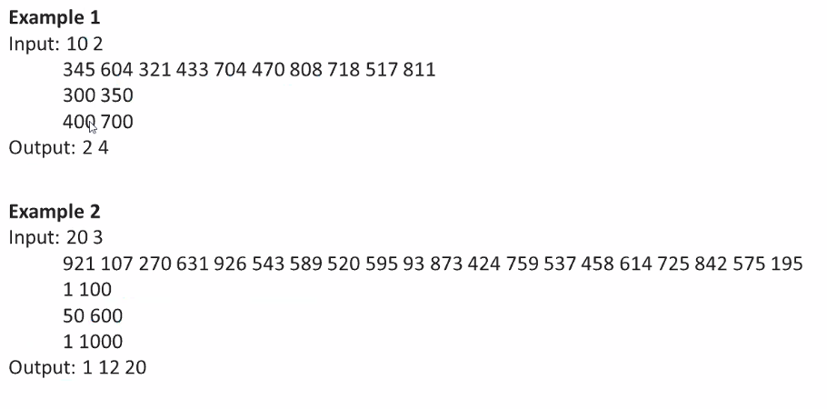

Time Complexities of searching methods
------------------------------------------------------------------------------------------------------------------------------------------------------------------------------------------------------------------------------------
1)

------------------------------------------------------------------------------------------------------------------------------------------------------------------------------------------------------------------------------------
2)

output will be max of sum of elements in odd positions and that of even positions.
------------------------------------------------------------------------------------------------------------------------------------------------------------------------------------------------------------------------------------
3)
Priority queue will always have the queue sorted, its similar to min heap.
------------------------------------------------------------------------------------------------------------------------------------------------------------------------------------------------------------------------------------
4)
after taking input, sort based on module dependency,
------------------------------------------------------------------------------------------------------------------------------------------------------------------------------------------------------------------------------------
5)
------------------------------------------------------------------------------------------------------------------------------------------------------------------------------------------------------------------------------------
6)
------------------------------------------------------------------------------------------------------------------------------------------------------------------------------------------------------------------------------------
7)
Here first make an array of frequencies of the digits in given array
and after that iterate through given array with their respective indices
respective indices:
HH= 0,1,2 12 34 56 -- indexes
if first digit is 0 or 1, second digit can be 0-9 HH:MM:SS
if first digit is 2, second digit can be 0-3
MM=0,1,2,3,4,5
SS=0,1,......9
and check whether the respective frequency is 0, if yes decrease the pointer, if yes, assign the digit in the index of given array and decrement the frequency at that index
------------------------------------------------------------------------------------------------------------------------------------------------------------------------------------------------------------------------------------
8)

------------------------------------------------------------------------------------------------------------------------------------------------------------------------------------------------------------------------------------
9)